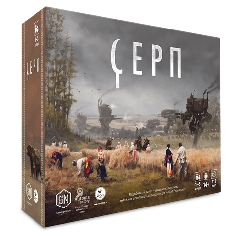
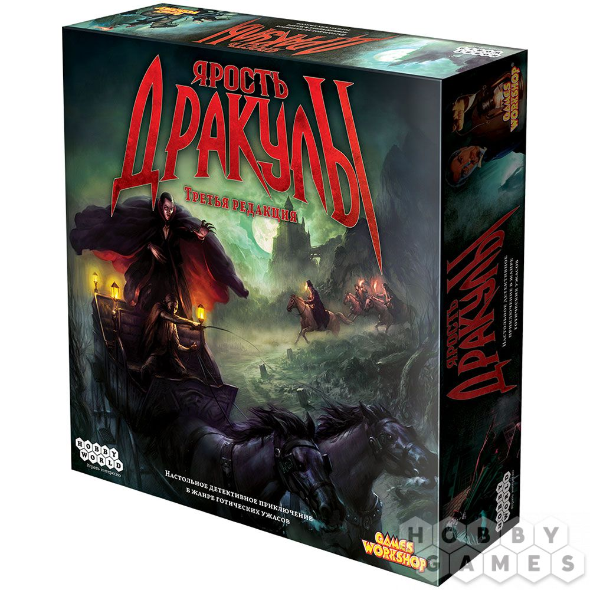
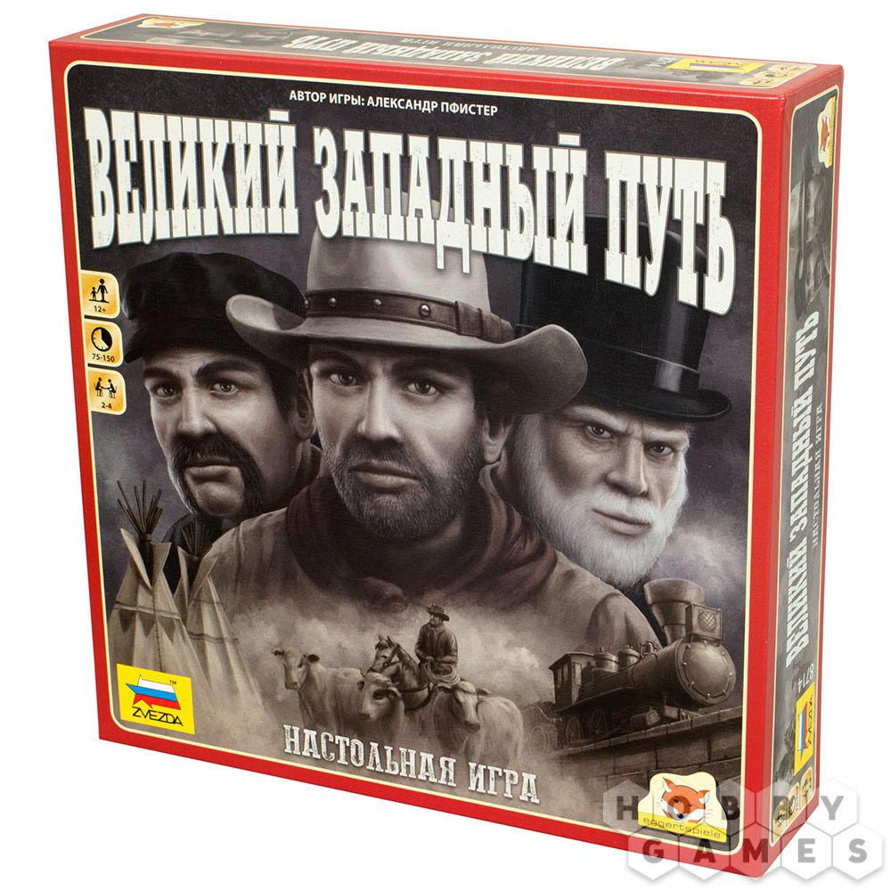
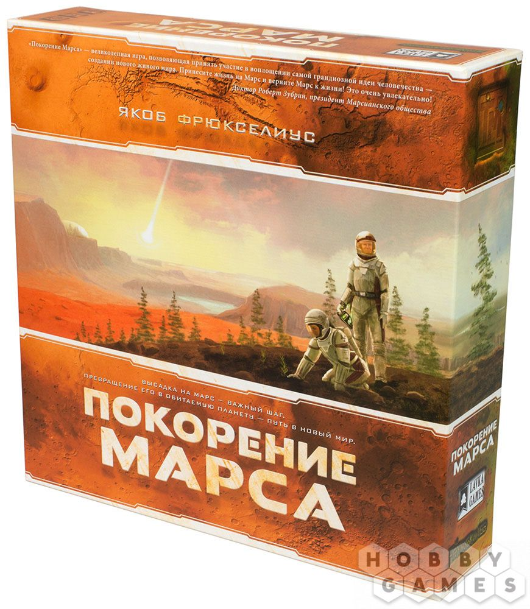

Настольная игра – это игра, в которую играют двое и более игроков, используя специальную доску, игровое поле или обычный стол. Доска и поле могут иметь маркировки и специально обозначенные места, а в самой игре часто используются разного рода жетоны, фишки, карточки и подобные им элементы, выполняющие во время игры отведённую им конкретную функцию.
Все настольные игры можно поделить на несколько групп и представить их в общей классификации.
В моей коллекции присутствуют разнообразные настольные игры, информацией о которых хочу поделиться:
| Название | Описание |
|---|---|
|  | Игрокам предстоит взять под контроль одну из наций в альтернативной истории Европы прошлого века и привести её к богатству и процветанию. Это комплексная игра с асимметричными фракциями (у каждой нации разные особенности и пути к победе), пронизанная огромным количеством интересных решений и необычных ситуаций. Новичкам будет непросто, но из-за продуманного дизайна и интересного мира «Серп» — одна из лучших игр для перехода на более сложный уровень. |
|
|
В альтернативной истории промышленная революция истощила запасы ископаемых ресурсов уже в 30-х годах прошлого века. Единственное, что теперь в состоянии утолить жажду неудержимого технического прогресса, — это гидроэлектроэнергия. Никола Тесла создал трансформатор — устройство, способное преобразовывать в электричество энергию воды, и этого достаточно для удовлетворения растущих потребностей промышленности.Каждый игрок берёт на себя роль главы одной из четырёх национальных компаний, оснащённых самой современной техникой. В их распоряжении новейшие патенты и гениальные инженеры. Ваша цель — занять наиболее выгодные места на бурных горных реках и перехватить наиболее выгодные контракты у конкурентов. |
|  | На дворе 1898 год. Тревожные вести начинают разноситься по аббатству Карфакс, а более восприимчивые к нечистой силе люди страдают от страшных видений. Слухи не обманывают, сам граф Дракула – Дьявол-во-плоти вернулся и обосновался в Лондоне, где вновь начал плести свои сети. Казалось, что восемь лет назад в Карпатских горах зло уже было побеждено, хотя и невероятно высокой ценой. Квинси Моррис отдал свою жизнь, чтобы остановить Дракулу, а многие другие охотники навсегда потеряли покой, а также своё душевное и физическое здоровье. Сегодня старые охотники во главе с профессором Ван Хельсингом вновь собираются вместе, чтобы дать отпор древнему злу! Готовьтесь к охоте тщательнее, ибо вам предстоит испытать на себе всю ярость Дракулы! |
|  | Действие настольной игры "Великий Западный Путь" переносит игроков в Америку девятнадцатого века, где им предстоит примерить на себя роли заводчиков скота. У каждого фермера есть собственное стадо рогатого скота в Техасе, которое будет приносить прибыль и, соответственно, победные очки. Для этого нужно перегнать ваше подросшее стадо в Канзас, а оттуда далее по всему континенту с помощью сети железных дорог.Путь до Канзаса будет нелёгким, ведь за стадом нужно внимательно следить, уметь выбрать хорошие места для отдыха в пути, нанимать ковбоев, а в финальной точке маршрута купить новое стадо, ещё больше прежнего. Также придётся вложиться в железнодорожное строительство, возводить различные здания с помощью строителей и инженеров, а также вести торговлю. Сумейте грамотно просчитать стратегию развития вашего предприятия и получите победные очки, которые принесут вам славу, почёт и звание лучшего заводчика скота! |
|  | Игрокам предстоит колонизировать Марс, меняя его природные условия, а также климат. В жизнь будут воплощены самые невообразимые и гениальные научные проекты, которые на самом деле существуют в реальности. Поднимайте температуру планеты, уровень кислорода, покройте пустоши океанами – всё для того, чтобы создать на Марсе условия, пригодные для жизни. И хотя перед вами стоит общая цель, которой все игроки стремятся достичь, не забывайте о конкуренции! Каждый будет получать дополнительные очки не только за вклад в освоение Красной планеты, но и за развитие масштабной инфраструктуры во всей Солнечной системе. |